정보처리기사(구) (2002-03-10 기출문제)
1과목: 데이터 베이스
1. 사용자로 하여금 데이터를 처리할 수 있게 하는 도구로서 사용자(응용프로그램)와 DBMS간의 인터페이스를 제공하는 언어는?
- 데이터정의어(DDL)
- 데이터 조작어(DML)
- 데이터 부속어(DSL)
- 데이터 제어어(DCL)
(정답률: 71%)

2. 계층 데이터 모델에서 두 레코드간에 직접 표현 방법을 제공하지 않는 것은?
- 1:1 관계
- 1:n 관계
- m:n 관계
- 두 개의 1:n 관계
(정답률: 48%)
3. Embedded-SQL의 설명으로 옳지 않은 것은?
- 응용 프로그램 내에 데이터를 정의하거나 질의하는 SQL 문장을 내포하여 프로그램이 실행될 때 함께 실행되도록 한다.
- Host Program의 컴파일시 선행처리기에 의해 내장 SQL문은 분리되어 컴파일된다.
- 호스트 변수와 데이터베이스 필드의 이름은 같아도 된다.
- 내장 SQL 문의 호스트 변수의 데이터 타입은 이에 대응하는 데이터베이스 필드의 SQL 데이터 타입과 일치하지 않아도 된다.
(정답률: 75%)
4. 데이터모델(data model)의 개념으로 가장 적절한 것은?
- 현실 세계의 데이터 구조를 컴퓨터 세계의 데이터 구조로 기술하는 개념적인 도구이다.
- 컴퓨터 세계의 데이터 구조를 현실 세계의 데이터 구조로 기술하는 개념적인 도구이다.
- 현실 세계의 특정한 한 부분의 표현이다.
- 가상 세계의 데이터구조를 현실 세계의 데이터 구조로 기술하는 개념적인 도구이다.
(정답률: 81%)
5. 데이터 모델, 스키마, 인스턴스 간의 관계로 옳은 것은?
- 모델 -> 스키마 -> 인스턴스
- 인스턴스 -> 스키마 -> 모델
- 스키마 -> 모델 -> 인스턴스
- 스키마 <- 모델 -> 인스턴스
(정답률: 62%)
6. 관계 데이터 모델에서 릴레이션(relation)에 포함되어 있는 튜플(tuple)의 수를 무엇이라 하는가?
- 차수(degree)
- 카디널리티(cardinality)
- 속성수(attribute value)
- 카티션 프로덕트(cartesian product)
(정답률: 82%)
7. 한 릴레이션의 기본키를 구성하는 어떠한 속성 값도 널(NULL)값이나 중복 값을 가질 수 없다는 것을 의미하는 것은?
- 개체 무결성 제약 조건
- 참조 무결성 제약 조건
- 보안 무결성 제약 조건
- 정보 무결성 제약 조건
(정답률: 78%)
8. 암호화 기법 중 암호화 알고리즘과 암호화 키는 공개해서 누구든지 평문을 암호문으로 만들 수 있지만, 해독 알고리즘과 해독키는 비밀로 유지하는 기법을 무엇이라 하는가?
- DES(Data Encryption Standard) 기법
- 공중키(public-key) 암호화 기법
- 대체(substitution) 암호화 기법
- 전치(transposed) 암호화 기법
(정답률: 74%)
9. 분산 데이터베이스 시스템에 관한 설명으로 거리가 먼 것은?
- 점진적인 시스템 용량의 확장이 가능하다.
- 융통성이 높다.
- 신뢰성과 가용성이 높다.
- 소프트웨어 개발 비용이 적게 든다.
(정답률: 92%)
10. 운영체제의 작업 스케줄링 등에 응용되는 것으로 가장 적합한 자료구조는?
- 스택(Stack)
- 큐(Queue)
- 연결리스트(Linked list)
- 트리(Tree)
(정답률: 76%)
11. 아래 트리구조에 대하여 preorder 순서로 처리한 결과는?
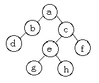
- a→b→d→c→e→g→h→f
- d→b→g→h→e→f→c→a
- a→b→c→d→e→f→g→h
- a→b→d→g→e→h→c→f
(정답률: 70%)
12. . 인덱스 순차 파일(ISAM: indexed sequential access-method)에 대한 설명으로 옳지 않은 것은?
- 인덱스를 저장하기 위한 공간과 오버플로우 처리를 위한 별도의 공간이 필요하다.
- 실제 데이터 처리 외에 인덱스를 처리하는 추가적인 시간이 소모되므로 파일 처리 속도가 느리다.
- 인덱스 영역은 실린더 색인 영역, 섹터 색인 영역, 트랙 색인 영역으로 구분된다.
- 순차 처리와 직접 처리가 모두 가능하다.
(정답률: 45%)
13. 조건을 만족하는 릴레이션의 수평적 부분집합으로 구상하며, 연산자의 기호는 그리스 문자 시그마(σ)를 사용하는 관계 대수 연산자는?
- select 연산자
- project 연산자
- join 연산자
- division 연산자
(정답률: 68%)
14. 관계형 데이터베이스에서 기본 테이블, 뷰, 인덱스, 데이터베이스, 응용계획, 패키지, 접근권한 등을 가지고 있는 것은?
- 사전(dictionary)
- 카탈로그(catalog)
- 레포지토리(repository)
- 스키마(schema)
(정답률: 59%)
15. 인덱스(Index)에 대한 설명으로 부적절한 것은?
- 인덱스는 데이터베이스의 물리적 구조와 밀접한 관계가 있다.
- 인덱스는 하나 이상의 필드로 만들어도 된다.
- 레코드의 삽입과 삭제가 수시로 일어나는 경우는 인덱스를 최소화한다.
- 인덱스를 통해서 테이블의 레코드에 대한 액세스를 빠르게 수행할 수 있다.
(정답률: 43%)
16. 관계형 데이터 모델링(E-R 모델)에서 릴레이션(관계)은 어떻게 표현되는가?
- 사각형
- 타원
- 마름모
- 삼각형
(정답률: 81%)
17. 학생과 학교 개체간의 학적 관계를 E-R 다이어그램으로 옳게 표현한 것은?


(정답률: 87%)
18. 밑줄 친 단어와 의미가 가장 가까운 것은?
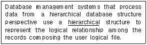
- tree
- network
- relational
- distributed
(정답률: 52%)
19. 다음은 무엇에 대한 설명인가?
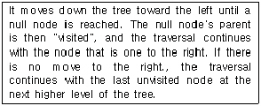
- preorder traversal
- postorder traversal
- inorder traversal
- BFS traversal
(정답률: 28%)
20. 트랜잭션(Transaction)이 가져야 할 특성에 해당하지 않는 것은?
- 원자성(Atomicity)
- 투명성(Transparency)
- 일관성(Consistency)
- 격리성(Isolation)
(정답률: 68%)
2과목: 전자 계산기 구조
21. 제어 데이터가 될 수 없는 것은?
- 연산자의 종류
- 연산을 위한 수치 데이터
- 인스트럭션의 주소지정방식
- 연산 결과에 대한 상태 플래그 내용
(정답률: 55%)
22. 다음 중 잘못 연결한 것은?
- Associative Memory-Memory Access 속도
- Virtual Memory-Memory 공간확대
- Cache Memory-Memory Access 속도
- Memory Interleaving-Memory 공간확대
(정답률: 47%)
23. 다음 설명 중 부프로그램과 매크로(Macro)의 공통점은?
- 삽입하여 사용
- 분기로 반복을 한다.
- 다른 언어에서도 사용한다.
- 여러 번 중복되는 부분을 별도로 작성하여 사용
(정답률: 67%)
24. op-code가 4비트면 명령어는 몇 개가 생성될 수 있는가?
- 15
- 16
- 8
- 7
(정답률: 73%)
25. 주기억장치는 하드웨어의 특성상 주기억장치가 제공할 수 있는 정보 전달능력에 한계가 있는데, 이 한계를 무엇이라 하는가?
- 주기억장치 전달
- 주기억장치 접근폭
- 주기억장치 밴드폭
- 주기억장치 정보 전달폭
(정답률: 62%)
26. 폰 노이만(Von Neumann)형 컴퓨터의 연산자 기능으로서 적합하지 않은 것은?
- 병렬처리 기능
- 함수 연산 기능
- 입·출력 기능
- 전달 기능
(정답률: 46%)
27. 인터럽트를 발생하는 모든 장치들을 인터럽트의 우선순위에 따라 직렬로 연결함으로써 이루어지는 우선순위 인터럽트 처리방법은?
- handshaking
- daisy-chain
- DMA
- polling
(정답률: 64%)
28. 컴퓨터의 메모리 용량이 16K×32bit라 하면 MAR(Memory Address Register)와 MBR(Memory Buffer Register)은 각각 몇 비트인가?
- MAR:12, MBR:16
- MAR:32, MBR:14
- MAR:12, MBR:32
- MAR:14, MBR:32
(정답률: 61%)
29. Interrupt 발생시 복귀주소를 기억시키는데 사용되는 것은?
- Accumulator
- Stack
- Queue
- Program Counter
(정답률: 55%)
30. 10진수 8을 Excess-3 코드로 표시하면?
- 1000
- 1100
- 1011
- 1001
(정답률: 51%)
31. 타이머(Timer)에 의한 인터럽트(Interrupt)는 다음 중 어디에 속하는가?
- 프로그램 인터럽트
- I/O 인터럽트
- 익스터널 인터럽트
- 머신 체크 인터럽트
(정답률: 62%)
32. DMA 제어기가 한 번에 한 데이터 워드를 전송하고 버스의 제어를 CPU에게 돌려주는 방법은?
- DMA 대량 전송
- 데이지체인
- 사이클 스틸링
- 핸드셰이킹
(정답률: 69%)
33. 다음 회로를 하나의 기호로 나타내면?
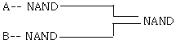
- NAND 게이트
- NOR 게이트
- OR 게이트
- AND 게이트
(정답률: 44%)
34. 스택 머신(stack machine)은?
- zero address machine
- one address machine
- two address machine
- three address machine
(정답률: 78%)
35. 중앙처리장치가 주기억장치보다 더 빠르기 때문에 프로그램 실행 속도를 중앙처리 장치의 속도에 근접하도록 하기 위해서 사용되는 기억장치는?
- 가상 기억장치
- 모듈 기억장치
- 보조 기억장치
- 캐시 기억장치
(정답률: 83%)
36. 입·출력 드루풋(throughput) 비율이 증가하는 순서를 옳게 나열한 것은?
- 폴링<인터럽트<DMA
- 폴링<DMA<인터럽트
- 인터럽트<폴링<DMA
- 인터럽트<DMA<폴링
(정답률: 41%)
37. fetch cycle에서 일어나는 micro instruction이다. 시행순서가 옳은 것은?
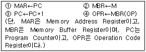
- ②→①→③→④
- ①→②→③→④
- ②→④→①→③
- ③→①→②→④
(정답률: 62%)
38. Interrupt 발생 원인이 아닌 것은?
- 정전
- 기억공간내 허용되지 않는 곳에의 접근 시도
- Operator의 조작
- 임의의 부프로그램에 대한 호출
(정답률: 56%)
39. 입·출력 전송이 중앙처리장치의 레지스터를 경유하지 않고 수행되는 방법은?
- I/O Interface
- Strove control
- interleaving
- DMA
(정답률: 71%)
40. 컴퓨터 내부에서 시스템 순간 순간의 상태를 나타내는 것은?
- SP
- PSW
- Interrupt
- MAR
(정답률: 71%)
3과목: 운영체제
41. 메모리 관리 기법 중에서 서로 떨어져 있는 여러 개의 낭비 공간을 모아서 하나의 큰 기억 공간을 만드는 작업을 무엇이라고 하는가?
- Swapping
- Coalescing
- Compaction
- Paging
(정답률: 49%)
42. 분산 시스템의 장점으로 거리가 먼 것은?
- 자원 공유
- 연산 속도 향상
- 신뢰도 향상
- 보안성 향상
(정답률: 89%)
43. 컴퓨터 시스템의 일반적인 보안 유지 방식으로 거리가 먼 것은?
- 외부 보안(external security)
- 사용자 인터페이스 보안(user interface security)
- 공용 키 보안(public key security)
- 내부 보안(internal security)
(정답률: 64%)
44. 페이지교체(replacement) 알고리즘 중에서 각 페이지들이 얼마나 자주 사용되었는가에 중점을 두어 참조된 횟수가 가장 적은 페이지를 교체시키는 방법은?
- FIFO(First-In First-Out)
- LRU(Least Recently Used)
- LFU(Least Frequently Used)
- NUR(Not Used Recently)
(정답률: 49%)
45. 인터럽트에 대한 설명으로 옳지 않은 것은?
- 인터럽트 서비스 루틴(interrupt service routine)은 입력장치에 대하여 버퍼가 꽉 찬(full) 상태인지를 조사한 후 입/출력 요청을 한다.
- 인터럽트 발생시 복귀주소(return address)는 시스템 큐에 저장한다.
- 인터럽트를 처리하고 나서 인터럽트 당한 주소로 되돌아가면 인터럽트가 일어나지 않았던 것처럼 수행된다.
- 입/출력 장치와 cpu를 전 속도(full speed)로 작동시키기 위해 인터럽트를 사용한다.
(정답률: 40%)
46. 파일 시스템에서 중앙에 마스터 파일 디렉토리가 있고, 그 아래 사용자 파일 디렉토리가 있는 구조이며, 다른 사용자와의 파일 공유가 대체적으로 어렵고, 파일 이름이 보통 사용이름, 파일 이름의 형태를 취하므로 파일 이름의 길이가 길어지는 디렉토리 구조는?
- 단일 디렉토리 구조
- 2단계 디렉토리 구조
- 트리형태 디렉토리 구조
- 비순환 그래프 디렉토리 구조
(정답률: 75%)
47. 어셈블러를 두 개의 Pass로 구성하는 이유로서 가장 적절한 것은?
- pass1, 2의 어셈블러 프로그램이 작아서 경제적이기 때문에
- 한 개의 pass만을 사용하면 프로그램의 크기가 증가하여 유지보수가 어렵기 때문에
- 한 개의 pass만을 사용하면 메모리가 많이 소요되기 때문에
- 기호를 정의하기 전에 사용할 수 있어 프로그램 작성이 용이하기 때문에
(정답률: 61%)
48. 매크로 프로세스가 수행해야 하는 기본적인 기능에 해당하지 않는 것은?
- 매크로 구문 인식
- 매크로 호출 인식
- 매크로 정의 인식
- 매크로 정의 저장
(정답률: 42%)
49. RR(Round-Robin) 스케줄링에 대한 설명으로 옳지 않은 것은?
- 선점(preemptive) 방식이다.
- 시간 할당량(time quantum)이 커지면 FCFS 스케줄링과 같은 효과를 얻는다.
- 시간 할당량이 작아지면 프로세스 문맥 교환(context switch)이 자주 일어난다.
- 작업이 끝나기까지의 실행시간 추정치가 가장 작은 작업을 먼저 실행시키는 기법이다.
(정답률: 55%)
50. 선점(preemptive) 방식을 사용하는 cpu 스케줄링 방식은?
- SRT 스케줄링
- FIFO 스케줄링
- HRN 스케줄링
- SJF 스케줄링
(정답률: 56%)
51. 너무 자주 페이지 교환이 발생하여 어떤 프로세스가 프로그램 수행에 소요되는 시간보다 페이지 교환에 소요되는 시간이 더 많은 경우를 무엇이라 하는가?
- locality
- thrashing
- working
- pre-paging
(정답률: 84%)
52. UNIX에서 파일의 사용허가를 정하는 명령은?
- finger
- chmod
- fsck
- ls
(정답률: 72%)
53. 유닉스 시스템에 대한 설명으로 거리가 먼 것은?
- 유닉스는 대부분 C 언어로 작성되어 있다.
- Stand alone 시스템에 주로 사용된다.
- Multi-task, Multi-user 시스템이다.
- Networking 기능이 풍부하다.
(정답률: 70%)
54. 분산 운영체제의 구조중 아래 설명에 해당하는 구조는?
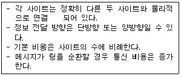
- ring connection
- hierarchy connection
- star connection
- partially connection
(정답률: 76%)
55. HRN 스케줄링에서 우선 순위 계산식으로 올바른 것은?
- (대기시간 + 서비스시간) / 서비스시간
- (대기시간 + 서비스시간) / 대기시간
- (대기시간 + 응답시간) / 응답시간
- (대기시간 + 응답시간) / 대기시간
(정답률: 69%)
56. 분산 시스템의 투명성(transparency)에 관한 설명으로 옳지 않은 것은?
- 위치(location) 투명성은 하드웨어와 소프트웨어의 물리적 위치를 사용자가 알 필요가 없다.
- 이주(migration) 투명성은 자원들이 한 곳에서 다른 곳으로 이동하면 자원들의 이름도 자동으로 바꾸어진다.
- 복제(replication) 투명성은 사용자에게 통지할 필요없이 시스템 안에 파일들과 자원들의 부가적인 복사를 자유로 할 수 있다.
- 병행(concurrency) 투명성은 다중 사용자들이 자원들을 자동으로 공유할 수 있다.
(정답률: 61%)
57. UNIX에서 파일에 대한 정보를 가지고 있는 inode의 내용으로 볼 수 없는 것은?
- 파일의 크기
- 최종 수정시간
- 소유자
- 파일 경로명
(정답률: 40%)
58. 사용자는 단말 장치를 이용하여 운영체제와 상호 작용하며, 시스템은 일정 시간 단위로 cpu를 한 사용자에서 다음 사용자로 신속하게 전환함으로써, 각각의 사용자들은 실제로 자신만이 컴퓨터를 사용하고 있는 것처럼 사용할 수 있는 처리 방식은?
- Batch Processing System
- Time-Sharing Processing System
- Off-Line Processing System
- Real Time Processing System
(정답률: 85%)
59. 그림과 같이 저장장치가 배치되어 있을 때 13K의 작업이 공간의 할당을 요구하여 최악 적합(Worst-Fit) 전략을 사용한다면 어느 주소에 배치되는가?
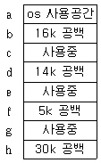
- b
- d
- f
- h
(정답률: 77%)
60. UNIX에서 프로세스를 복제하는 기능은?
- getppid
- getpid
- fork
- exec
(정답률: 64%)
4과목: 소프트웨어 공학
61. 위험성 추정을 위한 위험표(risk table)에 포함될 사항이 아닌 것은?
- 위험 발생시간
- 위험 발생확률
- 위험의 내용 및 종류
- 위험에 따르는 영향력
(정답률: 47%)
62. 결합도(coupling)가 강한 순서대로 옳게 나열된 것은?
- 내용 결합도>공통 결합도>제어 결합도>스탬프 결합도>데이터 결합도
- 공통 결합도>내용 결합도>제어 결합도>데이터 결합도>스탬프 결합도
- 데이터 결합도>내용 결합도>제어 결합도>공통 결합도>스탬프 결합도
- 공통 결합도>내용 결합도>제어 결합도>스탬프 결합도>데이터 결합도
(정답률: 53%)
63. 자료흐름도에서 구성요소에 대한 기호의 표현 연결이 옳지 않은 것은?
- 자료흐름 : 화살표로 표시
- 처리공정 : 마름모로 표시
- 자료저장 장소 : 직선(단선, 이중선)으로 표시
- 종착지 : 사각형으로 표시
(정답률: 63%)
64. 소프트웨어 검사 단계를 올바른 순서로 나열한 것은?
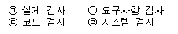
- (ㄱ)(ㄴ)(ㄷ)(ㄹ)
- (ㄷ)(ㄱ)(ㄴ)(ㄹ)
- (ㄴ)(ㄷ)(ㄹ)(ㄱ)
- (ㄴ)(ㄹ)(ㄱ)(ㄷ)
(정답률: 35%)
65. HIPO(hierarchy plus input process output)에 대한 설명으로 옳지 않은 것은?
- HIPO 다이어그램에는 가시적 도표(visual table of contents), 총체적 다이어그램(overview diagram), 세부적 다이어그램(detail diagram)의 세종류가 있다.
- 가시적 도표(visual table of contents)는 시스템에 있는 어떤 특별한 기능을 담당하는 부분의 입력, 처리, 출력에 대한 전반적인 정보를 제공한다.
- HIPO 다이어그램은 분석 및 설계 도구로서 사용된다.
- HIPO는 시스템의 설계나 시스템 문서화용으로 사용되고 있는 기법이며, 기본 시스템 모델은 입력, 처리, 출력으로 구성된다.
(정답률: 45%)
66. Rumbaugh의 객체 모델링 기법(OMT)에서 사용하는 세가지 모델링이 아닌 것은?
- 객체 모델링(object modeling)
- 정적 모델링(static modeling)
- 동적 모델링(dynamic modeling)
- 기능 모델링(functional modeling)
(정답률: 79%)
67. 소프트웨어 개발 과정에서 사용되는 요구 분석, 설계, 구현, 검사 및 디버깅 과정을 컴퓨터와 전용의 소프트웨어 도구를 사용하여 자동화하는 작업을 무엇이라고 하는가?
- CAT(Computer Aided Testing_
- CAD/CAM(Computer Aided Design and Manufacturing)
- CASE(Computer Aided Software Engineering)
- CAI(Computer Aided Instruction)
(정답률: 82%)
68. 소프트웨어 프로젝트 관리에 중요한 영향을 주는 3대 요소는?
- 사람, 문제, 프로세스
- 문제, 프로젝트, 작업
- 사람, 문제, 도구
- 작업, 문제, 도구
(정답률: 79%)
69. 객체는 다른 객체로부터 자신의 자료를 숨기고 자신의 연산만을 통하여 접근을 허용하는 것을 무엇이라 하는가?
- abstraction
- information hiding
- modularity
- typing
(정답률: 75%)
70. 자료흐름중심 설계 절차를 올바른 순서로 나열한 것은?
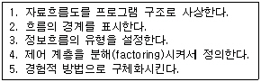
- 1-2-3-4-5
- 3-2-1-4-5
- 4-5-3-2-1
- 4-5-1-2-3
(정답률: 37%)
71. COCOMO 법에 의한 소프트웨어 모형에 속하지 않는 것은?
- Basic COCOMO
- Putnam COCOMO
- Intermediate COCOMO
- Detailed COCOMO
(정답률: 59%)
72. Boehm이 제안한 나선형 모델의 태스크(task)에 해당되지 않는 것은?
- 계획 수립(Planning)
- 위험 분석(Risk Analysis)
- 객체 구현(Object Implementation)
- 고객 평가(Customer Evaluation)
(정답률: 32%)
73. 소프트웨어 품질 보증을 위한 정형 기술 검토의 지침 사항으로 옳지 않은 것은?
- 논쟁과 반박의 제한성
- 의제의 무제한성
- 제품검토의 집중성
- 참가인원의 제한성
(정답률: 60%)
74. 소프트웨어 개발 방법론에서 구현(Implementation)에 대한 설명으로 가장 적절한 것은?
- 요구사항 분석 과정 중 모아진 요구사항을 옮기는 것
- 시스템이 무슨 기능을 수행하는지에 대한 시스템의 목표기술
- 프로그래밍 또는 코딩이라고 불리며, 설계 명세서가 컴퓨터가 알 수 있는 모습으로 변환되는 과정
- 시스템이나 소프트웨어 요구 사항을 정의하는 과정
(정답률: 75%)
75. 다음 중 가장 높은 응집력을 갖는 단계는?
- sequential cohesion
- coincidental cohesion
- functional cohesion
- procedural cohesion
(정답률: 57%)
76. 소프트웨어 품질목표에 대한 설명으로 옳지 않은 것은?
- 신뢰성(reliability) : 정확하고 일관된 결과를 얻기 위해 요구된 기능을 수행하는 정도
- 이식성(portability) : 다양한 하드웨어 환경에서도 운용 가능하도록 쉽게 수정될 수 있는 정도
- 상호운용성(interoperability) : 다른 소프트웨어와 정보를 교환할 수 있는 정도
- 사용용이성(usability) :전체나 일부 소프트웨어가 다른 응용 목적으로 사용될 수 있는 정도
(정답률: 68%)
77. 구조적 프로그래밍에서 사용하는 기본적인 제어구조에 해당하지 않는 것은?
- 순차(sequence)
- 반복(iteration)
- 호출(call)
- 선택(selection)
(정답률: 53%)
78. 객체지향기술에서 다형성(polymorphism)의 의미로 가장 적절한 것은?
- 다중 메시지를 수행하기 위하여 이용되는 기술
- 동일한 일을 수행하기 위하여 상이한 메소드 이름을 이용하는 능력
- 상이한 일을 수행하기 위하여 동일한 메시지 형태를 이용하는 능력
- 많은 상이한 클래스들이 동일한 메소드 명을 이용하는 능력
(정답률: 35%)
79. 소프트웨어 라이프사이클 단계중 가장 오랜 시간이 걸리며, 대부분의 비용을 차지하는 단계는?
- 타당성 검토 단계
- 운용 및 유지 보수 단계
- 기본설계 단계
- 실행 단계
(정답률: 87%)
80. 현재 프로그램으로부터 데이터, 아키텍쳐, 그리고 절차에 관한 분석 및 설계 정보를 추출하는 과정은?
- 재공학(re-engineering)
- 역공학(reverse engineering)
- 순공학(forward engineering)
- 재사용(reuse)
(정답률: 60%)
5과목: 데이터 통신
81. LAN(Local Area Network)의 특징으로 옳지 않은 것은?
- 오류 발생율이 낮다.
- 통신 거리에 제한이 없다.
- 경로 선택이 필요하지 않다.
- 망에 포함된 자원을 공유한다.
(정답률: 77%)
82. 패킷 교환망의 주요 기능으로 옳지 않는 것은?
- 경로 선택 제어
- 트래픽 제어
- 에러 제어
- 액세스 제어
(정답률: 36%)
83. 부가가치 통신망의 기능이 아닌 것은?
- 교환 기능
- 통신 처리 기능
- 정보처리 기능
- 메시지 저장 기능
(정답률: 65%)
84. 패킷교환의 가상회선 방식과 회선 교환 방식의 공통점은?
- 전용회선을 이용한다.
- 별도의 호(call) 설정 과정이 있다.
- 회선 이용률이 낮다.
- 데이터 전송 단위 규모를 가변으로 조정할 수 있다.
(정답률: 79%)
85. 원래의 신호를 다른 주파수대역으로 변조하지 않고 전송하는 방식은?
- 베이스 밴드 방식
- 압축 밴드 방식
- 광대역 방식
- 협대역 방식
(정답률: 71%)
86. 10 BASE T에서 10이 의미하는 것은?
- 배선할 수 있는 케이블의 길이가 10m이다.
- 데이터 전송속도가 10Mbps이다.
- 접속할 수 있는 단말의 수가 10대이다.
- 케이블의 굵기가 10㎜이다.
(정답률: 77%)
87. 다음 그림은 어떤 다중화 방식을 나타낸 것인가?
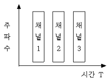
- 통계적 다중화
- 주파수 분할 다중화
- 진폭 분할 다중화
- 시분할 다중화
(정답률: 58%)
88. 통신 경로에서 오류 발생시 수신측은 오류의 발생을 송신측에 통보하고 송신측은 오류가 발생한 프레임을 재전송하는 오류 제어 방식은?
- 순방향 오류 수정(FEC)
- 역방향 오류 수정(BEC)
- 에코 점검
- ARQ(Automatic Repeat request)
(정답률: 65%)
89. 전송을 위한 제어 절차의 단계 중 3단계는?
- 데이터 링크 종결
- 정보 메시지의 전송
- 데이터링크의 설정
- 데이터 통신회선의 절단
(정답률: 62%)
90. 데이터 링크 제어 문자 중에서 수신측에서 송신측으로 부정 응답으로 보내는 문자는?
- NAK(Negative Acknowledge)
- ACK(ACKnowledge)
- STX(Start of TeXt)
- ENQ(ENQuiry)
(정답률: 74%)
91. 역 다중화기의 특징을 설명한 것이 아닌 것은?
- 비용을 절감할 수 있다.
- 회선 경로 변경이 어렵다.
- 광대역 통신 속도를 얻을 수 있다.
- 전용 회선의 고장시 DDD(Direct Distance Dial)망을 이용할 수 있다.
(정답률: 50%)
92. 다음 그림과 같은 전송 방식의 이름은?
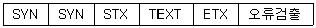
- 문자 동기 방식
- 비트지향형 동기방식
- 조보식 동기 방식
- 프레임 동기방식
(정답률: 71%)
93. 기저대 전송방식에서 데이터 신호 이외에 동기 신호, 상태신호 등을 포함하는 데이터 전송속도를 무엇이라 하는가?
- 데이터 신호 속도
- 변조 속도
- 데이터 전송 속도
- 베어러 속도
(정답률: 48%)
94. HDLC 의 프로토콜을 수행하는 국(STATION)이 아닌 것은?
- 주국
- 복합국
- 일차국
- 이차국
(정답률: 34%)
95. 8위상 2진폭 변조를 하는 모뎀이 2400baud라면 그 모뎀의 속도는?
- 2400bps
- 3200bps
- 4800bps
- 9600bps
(정답률: 43%)
96. 디지털 전송의 특징이 아닌 것은?
- 전송 용량을 다중화 함으로써 효율성이 높다.
- 중계기를 사용함으로 신호의 왜곡과 잡음 등을 줄일 수 있다.
- 암호화 작업이 불가능하므로 안정성이 없다.
- 디지털 기술의 발전으로 전송 장비의 소형화가 가능하며, 가격도 저렴화되고 있다.
(정답률: 73%)
97. Protocol의 기능을 설명한 것 중 옳지 않은 것은?
- 동기제어
- 역 다중화
- 요약화(encapsulation)
- 라우팅(routing)
(정답률: 37%)
98. 데이터 비트 7bit, start와 end 및 패리티 비트가 각각 1bit로 구성된 문자를 1600bps의 회선을 사용하여 비동기식으로 전송하면 데이터 최대 전송속도는 얼마인가?
- 9600(자/분)
- 7200(자/분)
- 9000(자/분)
- 8200(자/분)
(정답률: 57%)
99. VAN의 통신처리 기능으로서의 회선제어, 접속 등의 통신 절차를 변환하는 기능은?
- 프로토콜 변환
- 부호 변환
- 양자화 변환
- 제어 변환
(정답률: 44%)
100. 교환기술에서 성능 비교 요소가 아닌 것은?
- 오차 발생율
- 전파 지연
- 전송 시간
- 노드 지연
(정답률: 37%)